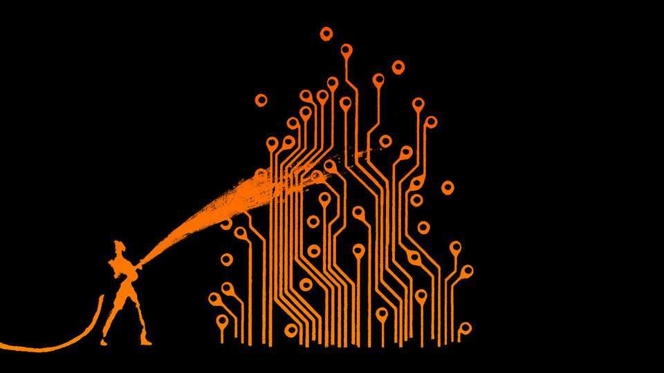

America should not imprison frontier AI
Fable is free. But the technology desperately needs better regulations
July 2nd 2026

New rules often come out of disasters. America’s Federal Reserve was founded following the Panic of 1907, when stock prices fell by half. Pressure from muckrakers such as Upton Sinclair brought about the Food and Drug Administration. The Securities and Exchange Commission was founded during the Great Depression. Artificial intelligence has not yet caused a calamity, but it might. Models like Anthropic’s Mythos and OpenAI’s GPT-5.6 Sol are extraordinarily good hackers and could become capable advisers to bioterrorists.
Understandably, the Trump administration is trying to regulate the technology before catastrophe strikes. It is working with AI companies on voluntary standards that could soon be released. Unfortunately, its efforts so far have been a mess.
Anthropic was its first victim, slapped with export controls in mid-June after the release of Fable, a guardrailed version of Mythos. That came not long after a row between the company and the Pentagon. Fears of a grudge were allayed when the administration appeared to compel OpenAI to limit access to its Sol model. Then, on June 30th, the Commerce Department abruptly lifted the ban on Fable after Anthropic fiddled with its safety protections.
Throughout, the government has seemed to make up rules on the fly. Its decisions have also had an unpleasant nationalistic tinge. At first it restricted Fable only for non-Americans; Anthropic decided that a wholesale block was the only way to comply. It looks as if the administration pulled the only lever available, knowing that it was a de facto ban. But throughout the past month’s brouhaha, the government has made clear that Americans’ AI access takes precedence over foreigners’.
Now that America has started licensing AI releases, it is unlikely to stop. But regulating frontier AI is tricky. China’s top models are only months behind America’s, and most are open-weight, meaning anyone can run or tinker with them. One recent release, GLM 5.2 from Z.ai, already matches the best of the last generation of American models. Chinese labs may take longer to catch up with Mythos, since they have fewer chips and American labs are cracking down on distillation, when competitors use the outputs of the best models to train their own. But that buys months, or a year at most. America could ban Chinese open-weight models and punish foreigners who use them. But even if it managed to enforce its ban, a vast home market would keep China’s model-makers going.
So a permanent block is unworkable. It is also undesirable. Many American AI firms and researchers rely on Chinese models, which are cheap and malleable. The intelligence that makes new models dangerous also makes them tremendously useful. Worries about China aside, a gulf between publicly available and restricted models is a problem. Societies adapt to AI best when improvements arrive gradually, not in a great lurch. Imagine the mess if regulators bottled up several generations of Mythos-style advances. The few with access would acquire great power. The sudden jump in capability whenever the models did get released would unleash chaos.
How then can models like Mythos and Sol be safely set free? The emerging norm provides for an evaluation period and a staggered release to trusted institutions. That is a good start, but it needs formalising. Some choices, such as how much risk to tolerate, belong to elected leaders. But politicians should not be micromanaging the process or horse-trading with AI companies, as they do today.
Once those goals are set, politicians should stand back. Evaluating a model is a technical problem. Governments have some expertise, for example in America’s Centre for AI Standards and Innovation or Britain’s AI Security Institute (AISI). But the private sector has more. The finance and electric-power industries offer structures where oversight is carried out by industry bodies, overseen by government. Something similar might help amalgamate knowledge from the AI labs, research groups and foreign bodies such as AISI.
Ideally, America would work with its allies on AI regulation. Alas, it is hard to imagine Donald Trump giving up the immense sovereign power that stems from control of frontier models. Locking others out of AI is not in America’s economic or strategic interest, but neither were indiscriminate tariffs or threats to Greenland.
So other countries must build leverage with their own AI sectors and regulations, and find fail-safes for American export controls. They could, for instance, ensure that businesses can easily switch to non-American models that run on non-American data centres. It is far wiser to depend on America than on China, but they would be mad to ignore the risks. ■
Subscribers to The Economist can sign up to our Opinion newsletter, which brings together the best of our leaders, columns, guest essays and reader correspondence.